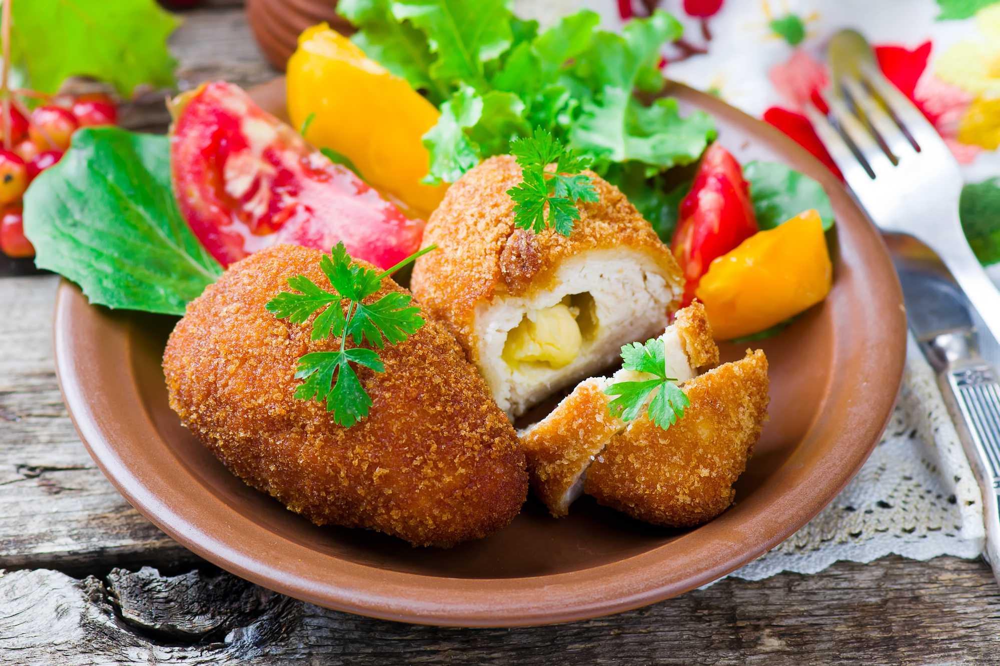

Кулинарный цех "Пирожок" 
Блюда по домашним рецептам - вам понравится!
Котлеты по-киевски

Котлеты по-киевски - это изысканное блюдо из нежного куриного филе.
Этот деликатес прославился своим неповторимым вкусом и ароматом, и стал популярным во многих странах.
Ингредиенты:
- Куриное филе
- Сливочное масло
- Соль и перец
- Мука
- Яйца
- Сухари панировочные
- Зелень (по желанию)
Рецепт приготовления:
- Отделите куриное филе от костей и обратной стороны, разрежьте каждый кусок пополам, чтобы получить тонкие ломтики.
- На каждый ломтик кладите небольшое кусочек сливочного масла, посолите и поперчите.
- Сложите филе вдвое, чтобы масло оказалось внутри, и защипните края, чтобы запечь масло внутри филе.
- Обваляйте каждую котлету в муке, затем взбитом яйце и наконец в сухарях панировочных.
- Обжарьте котлеты во фритюрнице до золотистой корочки.
- Выложите готовые котлеты на бумажное полотенце, чтобы удалить лишний жир, и подавайте горячими, украшенными зеленью.